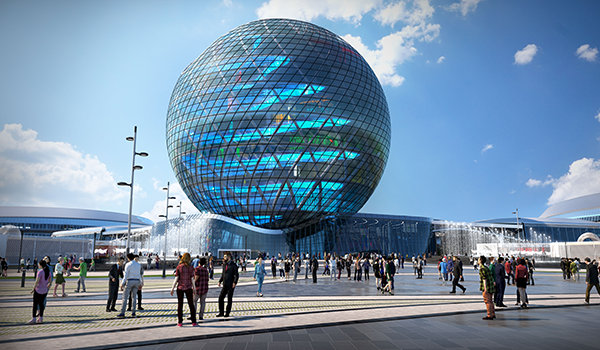

Новости
Международная специализированная Выставка «ЭКСПО-2017» в г. Астана
 10 июня 2017 года, начнет свою работу Выставка «Астана ЭКСПО-2017 - первая международная выставка, которая проводится на территории всего постсоветского пространства. Продлиться она три месяца и завершит свою работу 10 сентября т.г.
Все выставки EXPO – это события глобального масштаба, по значимости сравнимые с всемирными экономическими форумами, а по туристической привлекательности и посещаемости - с самыми популярными спортивными соревнованиями мира, такими как Олимпиады и Чемпионаты мира по футболу.
Тема предстоящей в Астане Выставки привлечет внимание как мировых лидеров в сфере ВИЭ, так и тех, кто связывает свою энергетическую независимость с зелеными технологиями. В мире происходит экономический кризис, связанный с падением цен на традиционные, ископаемые источники энергии. Сейчас все большее внимание уделяется использованию ВИЭ (возобновляемые источники энергии). И проект ЭКСПО-2017 является отличной площадкой для демонстрации достижений стран в этой области, а также мощным импульсом для ее дальнейшего развития.
Читать далее...
Компания «Beeline» стала Партнером выставки ЭКСПО-2017
Ночная панорамная съемка «Астана ЭКСПО-2017»
Онлайн трансляция
 Официальный договор был подписан между АО «Национальная компания «Астана ЭКСПО-2017» и ТОО «КаР-Тел».
Официальный договор был подписан между АО «Национальная компания «Астана ЭКСПО-2017» и ТОО «КаР-Тел».